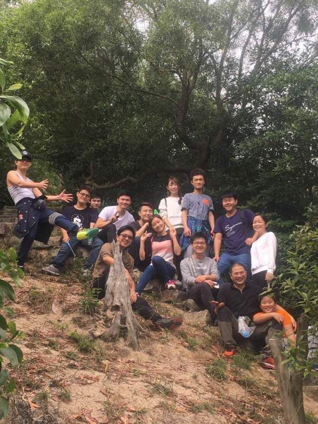

汇报人：刘洋洋
汇报时间：2017年01月10日
自我介绍
工作回顾
不足和改进
展望未来
建议/感谢
一、自我介绍
姓名：刘洋洋
籍贯：江西南昌
毕业院校：景德镇陶瓷大学
实习部门：研发部
实习岗位：软件工程师
二、工作回顾
岗前培训
面试的那天勇哥向我介绍了公司产品近几年的发展，以及公司在未来的技术发展趋势。2016年10月8日，也就是我入职的第一天，容姐带我完成了入职前的人事培训，强哥详细向我详细阐述公司二代项目及即将推出的三代项目，在介绍完每一位同事后向我分配了电脑及相关账号密码以及给我提供了一些技术资料
角色转变
之前工作涉及PC页面、web页面编写代码及数据交互，没有采用CSS、js等库，代码结构都是原生编写，来到公司的第一天就开始熟悉AppCan平台及其相关业务。
岗位认知
一直记得勇哥面试那天说过的一句话：“技术部的对于技术要求更高”，我也一直把这句话记在心里，因为我没有后端基础，前端也只是刚入门的一个小白，所以我按照强哥给我发的资料慢慢渗透后端一些知识以及不断地强化前端，
三、不足和改进
不足：代码不够规范，没有专门的使用某一编辑器 改进：多读看别人写的优秀代码结合公司代码养成代码规范，选择Visual Studio Code作为开发项目工具
不足：后端部分薄弱，造成数据交互困难 改进：买了相关书籍，也找了各种资源，会加强这块，目前不懂的会问同事，解决项目问题
不足：业务不熟悉，有时候会问好几遍才知道怎么进行 改进：暂时多咨询，听的时候更仔细，也会自己找相关资料了解、思考并总结
不足：项目经验欠缺，没有项目整体思想，工作效率较低，影响工作能力 改进：不懂的地方多问，不能犯同样错误，虚心请教学习
四、展望未来
未来工作计划
良好的工作态度
加强专业知识的学习，后端技能提升
每天必须计划时间总结问题
积极参与公司、以及部门的讨论，清楚了解产品发展
在实践中增长业务技能
为迎接更强的工作挑战，为公司创造更有意义的价值而奋斗
五、 建议和感谢
建议
1、变量命名、代码规范、组件封装等都能建立完整的文档规范体系供查阅
2、定期分享技术，促进交流，使整体技能提高
3、定期检阅代码，标注总结，好的可以共享推荐出来学习
4、每月能以演讲、答辩等形式来分享或总结
感谢
回顾这三个月来的工作，我在公司领导及各位同事的支持与帮助下，严格要求自己，按照公司的要求，较好地完成了自己的本职工作。 通过这段时间学习与工作，工作模式上有了新的突破，工作方式有了较大的改变，心里一直记得周总跟我讲的“工匠精神”和“感恩之心”， 强哥一笔一画介绍公司项目，勇哥在我工作遇到困难时耐心解释和晗哥的工作指导，坐在我旁边徐成的工作上各种帮助，容姐在人事上的指导以及关心以及其他各位同事 的各种帮助。 在新的一年我更要加倍努力工作、学习，促使自己跟上各位同事的节奏，加强专业技能，攻破自身薄弱环节，减少与大家的差距，努力发挥 自身价值，实现公司价值。最后，祝浩智的明天更加辉煌，祝大家新年一年，心想事成，万事如意!

Previous
Next